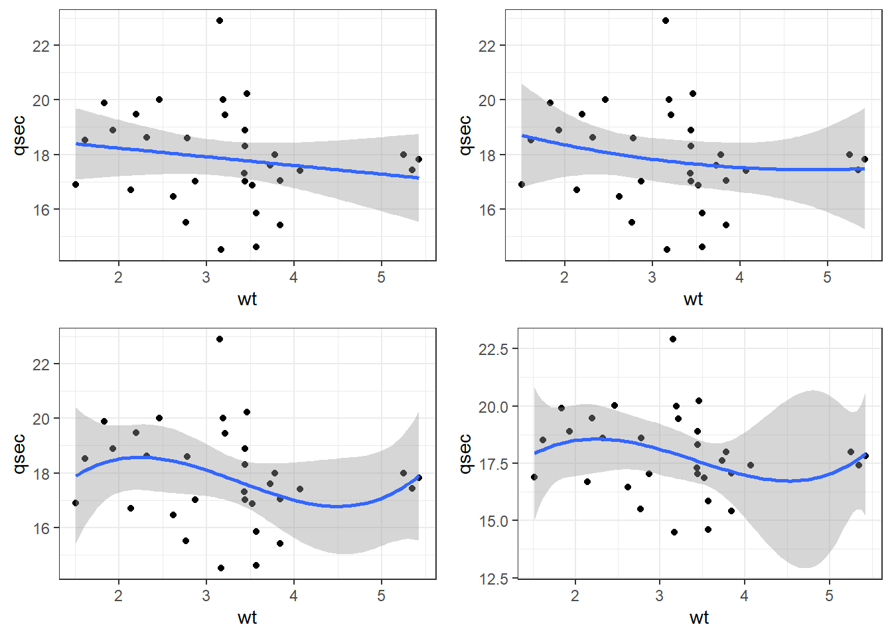

Chapter 6 Data Visualisation
Tables and graphs, survival plots, missing values. ## Summary Tables
6.0.1 Packages needed
6.0.2 Summarise by group
data(mtcars)
kable(mtcars %>% group_by(cyl) %>% summarise(Ave=mean(hp), StDev=sd(hp))) %>%
kable_styling(full_width = FALSE) %>% kable_minimal()| cyl | Ave | StDev |
|---|---|---|
| 4 | 82.63636 | 20.93453 |
| 6 | 122.28571 | 24.26049 |
| 8 | 209.21429 | 50.97689 |
6.0.3 Summary Table - Multiple functions, variables
# make sure brackets are correct
df.sum <- mtcars %>% select(mpg,cyl,hp) %>%
summarise(across(everything(),list(mean=mean,sd=sd)))
kable(df.sum,digits=2) %>% kable_styling(full_width = FALSE) %>%
kable_minimal() # perform the analysis
df.longer <- df.sum%>% pivot_longer(col=everything(),
names_to = c("Attribute",".value"),
names_sep = "_")
kable(df.longer,digits=2) %>%
kable_styling(full_width = FALSE) %>%
kable_minimal() # pivot longer the analysis to make it readable| mpg_mean | mpg_sd | cyl_mean | cyl_sd | hp_mean | hp_sd |
|---|---|---|---|---|---|
| 20.09 | 6.03 | 6.19 | 1.79 | 146.69 | 68.56 |
| Attribute | mean | sd |
|---|---|---|
| mpg | 20.09 | 6.03 |
| cyl | 6.19 | 1.79 |
| hp | 146.69 | 68.56 |
6.1 Specific package for summary tables:
6.1.1 Arsenal package
tab1 <- tableby(cyl~gear+hp+wt,data=mtcars)
summary(tab1, text=TRUE, digits=2, digits.p=2, digits.pct=1)| 4 (N=11) | 6 (N=7) | 8 (N=14) | Total (N=32) | p value | |
|---|---|---|---|---|---|
| gear | 0.01 | ||||
| - Mean (SD) | 4.09 (0.54) | 3.86 (0.69) | 3.29 (0.73) | 3.69 (0.74) | |
| - Range | 3.00 - 5.00 | 3.00 - 5.00 | 3.00 - 5.00 | 3.00 - 5.00 | |
| hp | < 0.01 | ||||
| - Mean (SD) | 82.64 (20.93) | 122.29 (24.26) | 209.21 (50.98) | 146.69 (68.56) | |
| - Range | 52.00 - 113.00 | 105.00 - 175.00 | 150.00 - 335.00 | 52.00 - 335.00 | |
| wt | < 0.01 | ||||
| - Mean (SD) | 2.29 (0.57) | 3.12 (0.36) | 4.00 (0.76) | 3.22 (0.98) | |
| - Range | 1.51 - 3.19 | 2.62 - 3.46 | 3.17 - 5.42 | 1.51 - 5.42 |
6.1.2 Summary tools package
descr(mtcars, stats = c("mean", "sd"), transpose = TRUE, headings = FALSE)
kable(descr(mtcars, stats = c("mean", "sd", "n.valid"), transpose = TRUE, headings = FALSE),digits = 3) %>% kable_styling(full_width = FALSE)%>% kable_minimal()## Warning in if (grepl(re1, str, perl = TRUE)) {: the condition has length > 1 and
## only the first element will be used## Warning in if (grepl(re2, str, perl = TRUE)) {: the condition has length > 1 and
## only the first element will be used## Warning in if (grepl(re3, str, perl = TRUE)) {: the condition has length > 1 and
## only the first element will be used##
## Mean Std.Dev
## ---------- -------- ---------
## am 0.41 0.50
## carb 2.81 1.62
## cyl 6.19 1.79
## disp 230.72 123.94
## drat 3.60 0.53
## gear 3.69 0.74
## hp 146.69 68.56
## mpg 20.09 6.03
## qsec 17.85 1.79
## vs 0.44 0.50
## wt 3.22 0.98
## Error in pryr::where(obj_name) : length(name) == 1 is not TRUE| Mean | Std.Dev | N.Valid | |
|---|---|---|---|
| am | 0.406 | 0.499 | 32 |
| carb | 2.812 | 1.615 | 32 |
| cyl | 6.188 | 1.786 | 32 |
| disp | 230.722 | 123.939 | 32 |
| drat | 3.597 | 0.535 | 32 |
| gear | 3.688 | 0.738 | 32 |
| hp | 146.688 | 68.563 | 32 |
| mpg | 20.091 | 6.027 | 32 |
| qsec | 17.849 | 1.787 | 32 |
| vs | 0.438 | 0.504 | 32 |
| wt | 3.217 | 0.978 | 32 |
6.2 Visual summary of data
Options are for markdown
dfSummary(mtcars, plain.ascii = FALSE, style = "grid",
graph.magnif = 0.5, valid.col = FALSE, tmp.img.dir = "/tmp")## temporary images written to 'C:\tmp'6.2.1 Data Frame Summary
6.2.1.1 mtcars
Dimensions: 32 x 11
Duplicates: 0
| No | Variable | Stats / Values | Freqs (% of Valid) | Graph | Missing |
|---|---|---|---|---|---|
| 1 | mpg [numeric] |
Mean (sd) : 20.1 (6) min < med < max: 10.4 < 19.2 < 33.9 IQR (CV) : 7.4 (0.3) |
25 distinct values |  |
0 (0.0%) |
| 2 | cyl [numeric] |
Mean (sd) : 6.2 (1.8) min < med < max: 4 < 6 < 8 IQR (CV) : 4 (0.3) |
4 : 11 (34.4%) 6 : 7 (21.9%) 8 : 14 (43.8%) |
 |
0 (0.0%) |
| 3 | disp [numeric] |
Mean (sd) : 230.7 (123.9) min < med < max: 71.1 < 196.3 < 472 IQR (CV) : 205.2 (0.5) |
27 distinct values |  |
0 (0.0%) |
| 4 | hp [numeric] |
Mean (sd) : 146.7 (68.6) min < med < max: 52 < 123 < 335 IQR (CV) : 83.5 (0.5) |
22 distinct values |  |
0 (0.0%) |
| 5 | drat [numeric] |
Mean (sd) : 3.6 (0.5) min < med < max: 2.8 < 3.7 < 4.9 IQR (CV) : 0.8 (0.1) |
22 distinct values |  |
0 (0.0%) |
| 6 | wt [numeric] |
Mean (sd) : 3.2 (1) min < med < max: 1.5 < 3.3 < 5.4 IQR (CV) : 1 (0.3) |
29 distinct values |  |
0 (0.0%) |
| 7 | qsec [numeric] |
Mean (sd) : 17.8 (1.8) min < med < max: 14.5 < 17.7 < 22.9 IQR (CV) : 2 (0.1) |
30 distinct values |  |
0 (0.0%) |
| 8 | vs [numeric] |
Min : 0 Mean : 0.4 Max : 1 |
0 : 18 (56.2%) 1 : 14 (43.8%) |
 |
0 (0.0%) |
| 9 | am [numeric] |
Min : 0 Mean : 0.4 Max : 1 |
0 : 19 (59.4%) 1 : 13 (40.6%) |
 |
0 (0.0%) |
| 10 | gear [numeric] |
Mean (sd) : 3.7 (0.7) min < med < max: 3 < 4 < 5 IQR (CV) : 1 (0.2) |
3 : 15 (46.9%) 4 : 12 (37.5%) 5 : 5 (15.6%) |
 |
0 (0.0%) |
| 11 | carb [numeric] |
Mean (sd) : 2.8 (1.6) min < med < max: 1 < 2 < 8 IQR (CV) : 2 (0.6) |
1 : 7 (21.9%) 2 : 10 (31.2%) 3 : 3 ( 9.4%) 4 : 10 (31.2%) 6 : 1 ( 3.1%) 8 : 1 ( 3.1%) |
 |
0 (0.0%) |
6.3 Correlation matrix
6.3.1 Ellipse style
corrdata <- mtcars %>% select(-c(cyl,disp,vs,am,gear,carb))
corr1 <- Hmisc::rcorr(as.matrix(corrdata))
M <- corr1$r
M
colnames(M) <- c("mpg", "HP", "Axle Ratio", "Weight (kPounds)", "Quarter Mile (s)")
rownames(M) <- c("mpg", "HP", "Axle Ratio", "Weight (kPounds)", "Quarter Mile (s)")
p_mat <- corr1$P
corr <- corrplot(M, type = "upper",method="ellipse", order = "hclust",
p.mat = p_mat, sig.level = 0.05, insig = "blank")Figure 6.1: CAPTION THIS FIGURE!!
## mpg hp drat wt qsec
## mpg 1.0000000 -0.7761684 0.68117191 -0.8676594 0.41868403
## hp -0.7761684 1.0000000 -0.44875912 0.6587479 -0.70822339
## drat 0.6811719 -0.4487591 1.00000000 -0.7124406 0.09120476
## wt -0.8676594 0.6587479 -0.71244065 1.0000000 -0.17471588
## qsec 0.4186840 -0.7082234 0.09120476 -0.1747159 1.00000000- Red is -ve correlation
- Blue is + ve correlation
- Blank is no correlation
6.4 Graphing
6.4.1 Frequency Histogram - basic
plot1 <- mtcars %>% ggplot(aes(qsec))+geom_histogram()
plot1## `stat_bin()` using `bins = 30`. Pick better value with `binwidth`.
Figure 6.2: CAPTION THIS FIGURE!!
6.4.2 Frequency Histogram + normal distribution
plot1 <- mtcars %>% ggplot(aes(qsec))
plot1+geom_histogram()## `stat_bin()` using `bins = 30`. Pick better value with `binwidth`.
Figure 6.3: CAPTION THIS FIGURE!!
# add normal plot
plot1 + geom_histogram(aes( y=..density..))+stat_function(fun = dnorm, args = list(mean =mean(mtcars$qsec), sd=sd(mtcars$qsec))) + theme_bw()## `stat_bin()` using `bins = 30`. Pick better value with `binwidth`.Figure 6.4: CAPTION THIS FIGURE!!
# ..density.. changes y axis to density, not count. stat function defines normal line based on data provided.6.4.3 multiple plot of all distributions
mtcars %>% keep(is.numeric) %>% gather() %>% ggplot(aes(value)) + facet_wrap(~ key, scales = "free") + geom_histogram()## `stat_bin()` using `bins = 30`. Pick better value with `binwidth`.
Figure 6.5: CAPTION THIS FIGURE!!
6.4.4 x*y scatterplot with linear regression or polynomial regression
plot2<- mtcars %>% ggplot(aes(x=wt,y=qsec))
plot2a <- plot2 +geom_point()+stat_smooth(method='lm',formula=y~x) + theme_bw()
plot2b <- plot2 +geom_point()+stat_smooth(method='lm',formula = y ~ poly(x, 2)) + theme_bw()
plot2c <- plot2 +geom_point()+stat_smooth(method='lm',formula = y ~ poly(x, 3)) + theme_bw()
plot2d <- plot2 +geom_point()+stat_smooth(method='lm',formula = y ~ poly(x, 4)) + theme_bw()
grid.arrange(plot2a,plot2b,plot2c,plot2d,nrow=2,ncol=2)

Figure 3.1: CAPTION THIS FIGURE!!
6.4.5 Add formula to plot.
my.formula <- y ~ x
a <- plot2 +geom_point()+geom_smooth(method='lm',formula=my.formula)+stat_poly_eq(formula = my.formula, aes(label = paste(..eq.label.., ..rr.label.., sep = "~~~")), parse = TRUE) + theme_bw()
my.formula2 <- y ~ poly(x, 2)
b <- plot2 +geom_point()+geom_smooth(method='lm',formula=my.formula2)+stat_poly_eq(formula = my.formula2, aes(label = paste(..eq.label.., ..rr.label.., sep = "~~~")), parse = TRUE) + theme_bw()
grid.arrange(a,b,nrow=1)
Figure 6.6: CAPTION THIS FIGURE!!